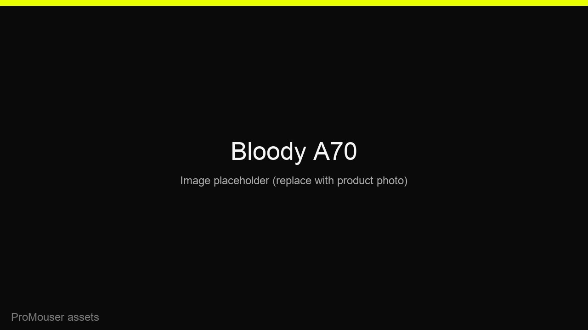

A click-focused mouse that prioritizes responsiveness and a direct, no-frills feel.
The Bloody A70 is commonly chosen by players who care most about button response and consistent clicking. It can be a practical choice for Minecraft-focused play, but comfort and long-session usability depend heavily on hand size and grip.

Click response
A direct click feel that suits fast, repeated input in Minecraft-focused play.
Shape matters
Best results come from matching the shape to your grip and avoiding strain in long sessions.
What to evaluate before buying
Focus on comfort, click feel, and real-world reliability before committing.
Comfort
Test whether the body width and button placement feel natural for your grip.
Consistency
Prioritize stable tracking and predictable clicks over extreme specs on paper.
Settings
Use a simple DPI and sensitivity setup, then refine only after you feel comfortable.
Next steps
Use the CPS test and mouse tips pages to validate your setup.
Who it fits best
Good fit if
You want a click-focused mouse and you prefer straightforward hardware without a complicated workflow.
Consider alternatives if
You need maximum comfort for long sessions or you prefer lighter builds and simpler shapes.
Verdict
A practical option for Minecraft-focused play when the shape fits your hand. Confirm comfort first, then optimize your settings.